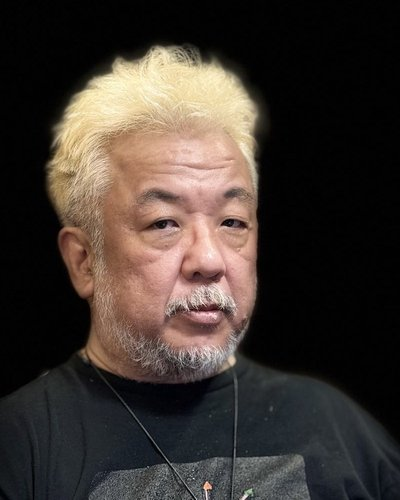

Subjectivity Intersection Emergence Lab（SIEL）, Hokuto, Yamanashi, Japan

The hard problem of consciousness asks why an objective brain gives rise to subjective experience. We reverse that explanatory order. Here, subjectivity denotes the non-objectifiable subject of existence that makes observation and experience possible, not a personal ego or the contents of experience. We ask first how a shared objective world arises from intersection, and then how the same intersection becomes experience through a body. Braid quantum gravity begins with a finite source of directed intersections that retains their order and history, rather than with a pre-existing spacetime. It constructs quantum states and four-outcome probabilities, a Lorentzian-type “1+3” carrier, spacetime geometry, and a restricted Einstein low-energy limit. Where the four probabilities meet this carrier, an eight-component “fingerprint” records the direction and history of Braid intersection. The carrier defines a formal light-cone-like boundary, while source updating and record generation differ in order on all 24 directed edges of the finite model. We explored whether this fingerprint also appears in embodied records using an existing quantum–EEG archive of 26 participants performing 26 tasks each. Participant P1, previously top-ranked when mean, peak, and stability of quantum–EEG correspondence were considered together, again ranked first among 26 for correspondence between the fingerprint and both four-electrode EEG Laplacian scale (Lambda) and fourteen-electrode topology (H1 persistence, ASPL, lambda2). Both correspondences remained after conditioning on quantum radius and the other EEG geometry; P1's own quantum source also ranked first against its EEG in both views. Independent implementations recomputed these results, which remain exploratory findings within the same archive. We interpret quantum measurement and brain geometry as two objective projections of the same intersection and predict that retention of crossing coherence—the consistency of source direction and history—supports their direction-sensitive correspondence. The theory further predicts that light-associated duality and positive–negative polarity appear as the direction of emotion in Heart, temporal causality as the flow of thought in Mind, and spatial separation as the breadth of perception in Body. We explored these predictions in EEG using the explicit mappings **light/Heart → Delta + Theta, time/Mind → Beta, and space/Body → Alpha + Gamma**. For the light–Delta + Theta correspondence, P1 again ranked first among 26 and survived correction for participant selection (p = 0.012). Further exploratory candidates appeared for light in P3, space in P5, and time in P19 and P20. The central question is not only why a brain might produce subjectivity, but how intersection of the subject of existence could jointly give rise to a shared objective world and embodied subjective experience.
Satoru Watanabe is an independent researcher in Japan and founder of the Subjectivity Intersection Emergence Lab (SIEL). He develops Subjectivity Intersection as a framework for studying observation, consciousness, and the observer problem, combining theoretical work with EEG–quantum experiments and operational investigations of subjectivity.